Chapter 1. Overview of EWARS in a box
WHO’s Emergency Response Framework (ERF)1 highlights the Early Warning, Alert and Response System (EWARS) as one of the priority emergency interventions to be implemented within the first two weeks of an emergency response operation. The aim of ensuring early detection and prompt response is to mitigate the impact of communicable diseases among crisis-affected populations.
EWARS in a box brings novel technology to early warning in emergencies and is supported by the Health Emergencies Programme at WHO headquarters. Strategic use of technology and innovation makes disease detection in emergencies easier and more effective, saving lives in the process.
EWARS in a box is an innovative and effective tool designed to detect disease outbreaks quickly in emergency, conflict and vulnerable settings. It can be deployed in humanitarian emergencies such as:
war or civil strife, affecting large civilian populations and causing displacement;
natural disasters, such as floods, tsunamis, volcanic eruptions and earthquakes;
food insecurity and famine;
large-scale disease outbreaks that overwhelm national capacity;
food, chemical or radio-nuclear spills, and public health emergencies due to other hazards.
EWARS in a box is mainly used by front-line workers; it consists of manuals, mobile phones and laptops to capture and submit key data, thereby facilitating multifaceted, in-depth analysis and monitoring/tracking. The EWARS in a box kit contains the items depicted in Fig. 1.1.
Fig. 1.1. EWARS in a box kit contents
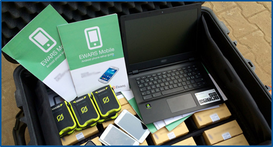
EWARS in a box is designed with the needs of front-line users in mind. It is a simple, rapidly deployable and flexible tool (Fig. 1.2).
Fig. 1.2. EWARS in a box as a simple, rapidly deployable and flexible tool
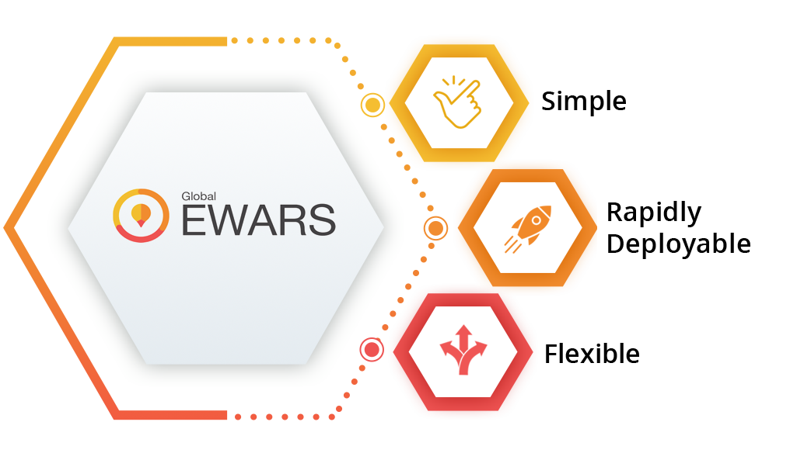
For ease of use and brevity, this guide will refer to the EWARS in a box tool as “EWARS” throughout. Subsequent sections address the different EWARS components, its key modules, EWARS environments and deployment.
1.1 EWARS components
EWARS comprises several components, including WHO EWARS/EWARS Web, EWARS Country, EWARS Stand-alone, EWARS Mobile and Short Message Service (SMS) Gateway, as shown in Fig. 1.3.
Fig. 1.3. EWARS components
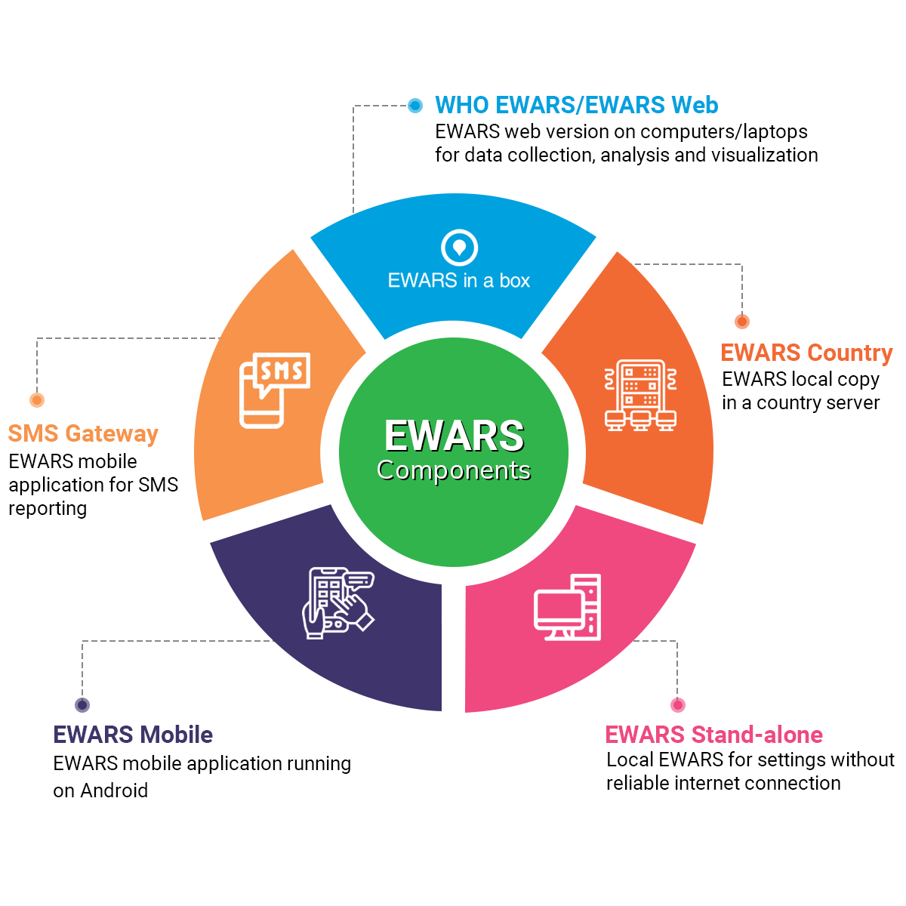
WHO EWARS/EWARS Web refers to the EWARS web version, which is accessible via the internet. It contains all EWARS accounts across regions and countries.
EWARS Country is a local copy of EWARS running on a country server that may be accessible via the internet or open to a private network only. It is not connected to WHO EWARS: it is an entirely separate server, containing all the EWARS components and roles, but the data and components are only accessible by the authorized users of that country.
EWARS Stand-alone is a local EWARS developed for settings without reliable internet connections, which connects to either WHO EWARS or an EWARS Country server when connection is established.
EWARS Mobile is the mobile application running on Android, which is used for reporting data from the field to WHO EWARS.
SMS Gateway is the EWARS Mobile application on Android developed to facilitate SMS reporting in settings with unreliable internet connection.
1.2 EWARS components and their deployment in various scenarios
EWARS can be deployed easily under various scenarios in different countries or contexts, even where there is unreliable or no internet connectivity. A few key scenarios are described below, depicting practical situations in which EWARS is deployed.
In Scenario A, there is reliable internet connectivity. Field workers such as nurses, surveillance officers and community health workers throughout the country are equipped with mobile phones and can submit reports directly to WHO EWARS (Fig. 1.4).
Fig. 1.4. EWARS reporting with reliable internet connectivity
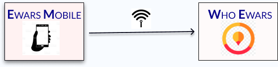
In this instance, the EWARS Mobile application is installed on the EWARS phones of field workers for reporting purposes. The field workers, Reporting Users of primary health-care centres (PHCCs), laboratory workers, mobile clinics and field hospital workers capture data on the mobile application and submit it directly to WHO EWARS using an internet connection (Fig. 1.5).
Fig. 1.5. Scenario A: reporting with reliable internet connectivity
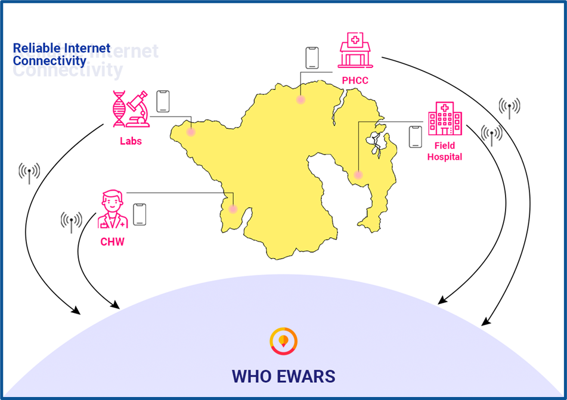
In Scenario B, the internet connection is unreliable – for example, in the case of those in remote islands and rural areas, where Reporting Users visit the local surveillance office on a regular basis (such as daily or weekly) to submit reports. Possible deployments for this scenario are outlined below.
EWARS Stand-alone functions as an intermediary medium, facilitating reporting between EWARS Mobile and WHO EWARS in scenarios that are offline or that lack access to reliable internet connections (Fig. 1.6). Reporting Users can input data in offline mode using EWARS Mobile. All Reporting Users visit the local surveillance office, where EWARS Stand-alone is set up, regularly. They submit the entered data to EWARS Stand-alone through quick response (QR) code sharing, using a local hotspot.
Fig. 1.6. EWARS reporting with unreliable internet connectivity
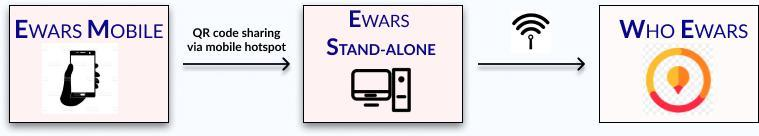
The data in EWARS Stand-alone are submitted to WHO EWARS using an internet connection (Fig. 1.7). For detailed information, refer to Chapter 25. EWARS Stand-alone.
Fig. 1.7. Scenario B: reporting via EWARS Stand-alone overview
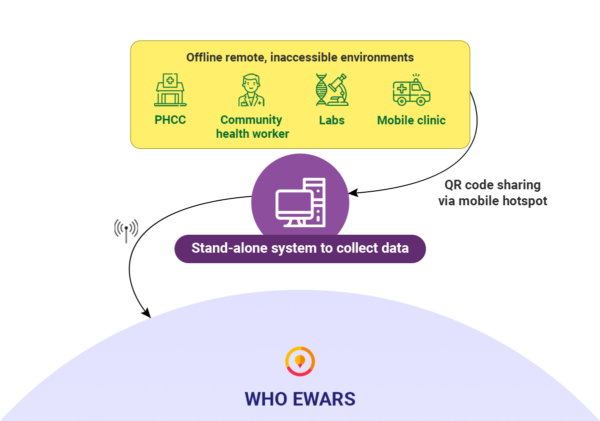
In deployment using the internet connection of the surveillance office, Reporting Users collect the data in offline mode and submit it from their EWARS Mobile application to WHO EWARS, using the office internet connection (Fig. 1.8). These submitted reports are saved as “queued” reports.
Fig. 1.8. EWARS reporting using office internet connection
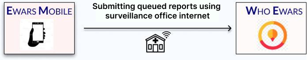
Reporting Users visit the surveillance office and submit the queued reports to WHO EWARS through the office internet connection (Fig. 1.9).
Fig. 1.9. Scenario B: reporting via queued reports overview
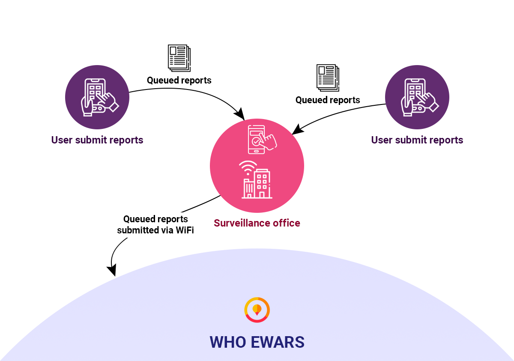
In Scenario C, all Reporting Users are equipped with mobile phones but are not able to visit the surveillance office regularly, or the office is not in the near vicinity – for example, those in remote areas, conflict-affected areas or areas with poor infrastructure support. These users can access the SMS Gateway. The Reporting Users collect their reports in their EWARS Mobile application and submit them to WHO EWARS via SMS (Fig. 1.10).
Fig. 1.10. EWARS reporting using SMS Gateway connection
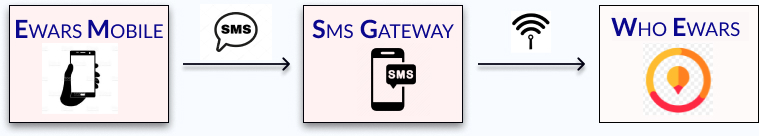
These reports are received by the SMS Gateway phone. This is a dedicated Android phone with the EWARS SMS Gateway application activated. It relays the reports received as SMSs to the WHO EWARS server, using an internet connection (Fig. 1.11). For detailed information, refer to Chapter 24. SMS reporting and teams.
Fig. 1.11. Scenario C reporting overview
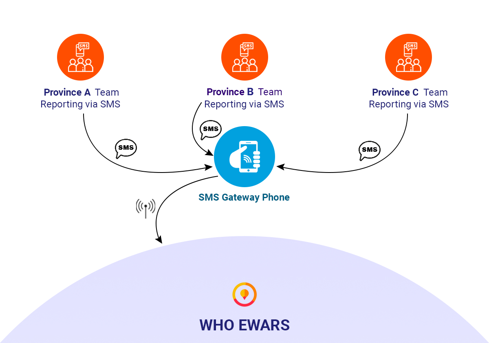
 Note: all the above scenarios use the WHO EWARS server. If you want to run EWARS on your own server, follow the steps below. Note: all the above scenarios use the WHO EWARS server. If you want to run EWARS on your own server, follow the steps below. |
In an EWARS Country scenario, the country wants to host its server locally. This is an entirely separate server that contains all the EWARS components and roles, but the data and components are accessible only by the authorized users of that EWARS Country server. All the information given above for Scenarios A, B and C is also applicable, but the server used is an EWARS Country one.
In EWARS deployment as in Scenario A, with stable internet connection, the field workers can submit the report directly to the EWARS Country server using the internet connection (Fig. 1.12).
Fig. 1.12. EWARS reporting using EWARS Country server
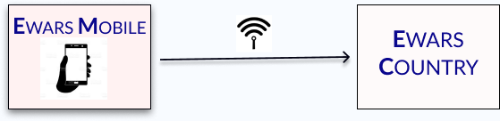
1.3 Key modules
Fig. 1.13 and Table 1.1 set out the four key EWARS modules.
Fig. 1.13. Key EWARS modules
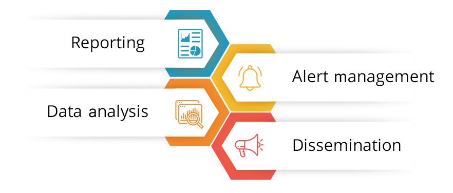
Table 1.1. Details of the key EWARS modules
+===============================================================================+==================================================================+ | Module | Description | +===============================================================================+==================================================================+ | Reporting | EWARS facilitates data collection and reporting in both offline and online modes. With the Reporting module, users can report from different geographical locations, such as the community, temporary establishments, emergency shelters, internally displaced person (IDP) or refugee camps and mobile clinics. Reporting can happen from fixed locations too, such as PHCCs or field hospitals.| +——————————————————————————-+——————————————————————+ | Alert management . | EWARS has a dedicated Alert management module that aims to detect potential disease threats at the earliest possible opportunity. This module facilitates tracking of disease threats, verification of alerts, risk assessment and determination of the risks involved. Furthermore, timely resolution of alerts helps improve disease outbreak detection in humanitarian emergencies, saving lives and arresting potential spreads before they become hard to control. | +——————————————————————————-+——————————————————————+ | Data analysis | EWARS analyses data with automated novel techniques. The Data analysis module supports simple to complex analyses and interactive data explorations online and offline. EWARS data visualizations via graphs, charts and tables enable accurate data interpretation for rapid response. The system also facilitates creation of maps. EWARS systematically logs data and facilitates filtering and downloading in different formats.| +——————————————————————————-+——————————————————————+ | Dissemination | The Dissemination module provides various ways to disseminate information to users, emergency responders and the public. This is done through configurable dynamic Dashboards, a public-facing EWARS website and automated bulletins. These bulletins are created at regular intervals, such as on a weekly or monthly basis. For example, this module includes a weekly epidemiological bulletin in the majority of EWARS deployments.| +——————————————————————————-+——————————————————————+
1.4 Types of users
EWARS supports different types of users (Fig. 1.14), providing to different levels of functionality and permissions for the application. The users supported by EWARS are:
Super Administrators
Account Administrators
Geographical Administrators
Reporting Users.
Fig. 1.14. Types of EWARS users
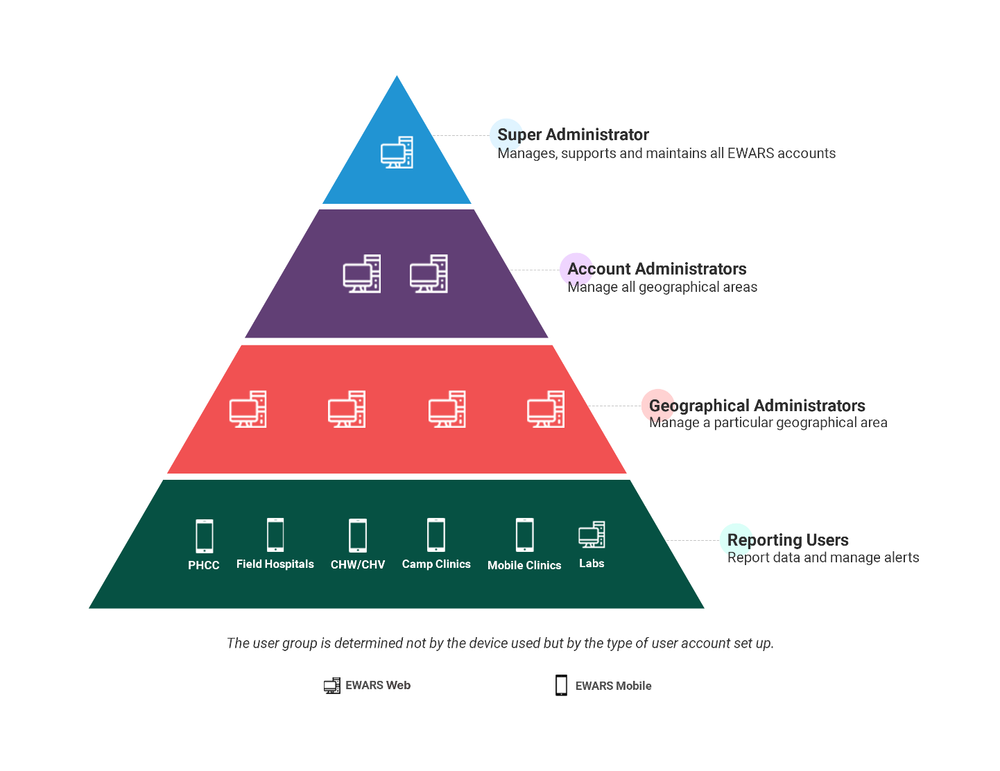
A Super Administrator is usually a member of the EWARS core team at the central level. Super Administrators look after EWARS management across all accounts. They can create and delete EWARS Country accounts according to the needs and requests of country emergency responders or the surveillance team.
An Account Administrator manages the individual country/context account, including alerts, bulletins, dashboards and the EWARS website.
A Geographical Administrator manages EWARS in specific geographical areas, or areas in a country/context. Geographical Administrators are responsible for managing alerts, dashboards, bulletins and data analysis for that area.
A Reporting User reports data to EWARS from specific locations. Reporting Users have a very specific set of account permissions that facilitate submission of particular reports from particular locations. Locations can range from PHCCs, mobile clinics and field hospitals to the community. A Reporting User could be a nurse; a medical officer in a PHCC, health post or mobile clinic; a surveillance officer in a district office; or a community health worker/volunteer from the community. Most EWARS Reporting Users use EWARS Mobile for reporting; however, if logistics allow, Reporting Users can use tablets, desktops and laptops as well. In remote locations where there is no internet connection, Reporting Users can still create reports and synchronize them later when they have internet access. These accounts may be generic and linked to a health facility (rather than a specific individual).
This web user guide provides in-depth knowledge about the various features and users of EWARS Mobile. It is intended to assist web users only. The web user could be an Account Administrator or a Geographical Administrator; a mobile user guide is available for Reporting Users. He/she can access the system through an internet browser such as Google Chrome or Microsoft Firefox. All the permissions can be configured in the system but new roles cannot be created.
Chapter 2 covers all aspects of the registration process for EWARS web users in detail.
Emergency response framework (ERF), second edition. Geneva: World Health Organization; 2017 (https://apps.who.int/iris/handle/10665/258604, accessed 4 April 2022).↩︎